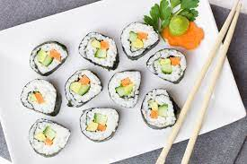

Probablemente sea uno de los desafíos más grandes que el hombre se haya impuesto: circunscribir los platillos del mundo entero a un número tan limitado y escueto. De todas maneras, hay algunos clásicos que han traspasado las fronteras de su tierra natal para convertirse en las comidas favoritas de la mayoría de la población mundial.
Como su nombre lo indica, es originaria de Hamburgo -Alemania-. La enorme migración germánica hacia los Estados Unidos hizo que las hamburguesas se volvieran cada vez más popular, hasta conocerse en el mundo entero: carne picada bien comprimida y en forma de disco que, generalmente, se sirve como sándwich. Se le agregan verduras y se acompaña con papas fritas.

Este famoso pan italiano, horneado, plano y circular, elaborado con harina de trigo, sal, agua y levadura, puede llevar los más diversos ingredientes por arriba. Su versión básica: salsa de tomate y queso. En Italia, la pizza más conocida es la “margarita”, con tomates, queso mozzarella y albahaca. Refleja los colores de la bandera italiana y su nombre hace honor a la reina Margherita.

Este tradicional plato de Japón despertó furor en las últimas décadas y alrededor de todo el globo terráqueo. Se prepara con arroz de grano redondo, que es envuelto en algas nori junto a diferentes ingredientes. Mayoritariamente, se tratan de pescados crudos acompañados con vegetales. El salmón y el kani kama suelen ser las estrellas favoritas del sushi.
Continuando con el arroz y los pescados, la paella es un clásico de España que ha sabido ganarse el aprecio internacional. Originaria de Valencia, debe su nombre a la gigante “paellera” dónde se cocina. Se trata de un buen plato de arroz y mariscos, condimentado con azafrán y hierbas verdes. Como siempre, hay muchas versiones y se hace también con pollo, cerdo o, simplemente, vegetales.
.jpg)